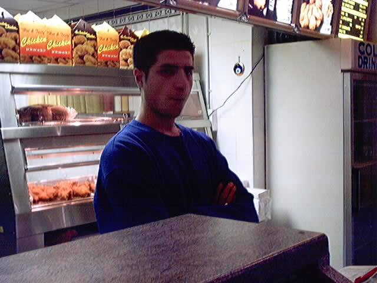

This website, officially:
KeBaB KrU w0z h3r3.

This man owns a chain of Kebab houses. Nuff respect.
Admin: your security is non-existant. download the security patches from ms.
if you need help contact us. nothing was harmed.
Message: So I'm told you should only deface sites for a reason. Well, I am. I'm defacing this site, because I dont like microsoft. I mean. The richest company in the world. They could atleast afford some good coders. I've recently aquired WinME. It's just got worse. Where's the new stuff? All it seems to have done is taken you further away from the actual machine. The DOS prompt is b0rked. The networking stuff is fucked. The thing wont stay up more than a week without crashing. Its fucking outrageous. I could just about live with win98. this is just plain shite.
The only MS product I've been satisfied with is Image Composer. The download was free. The product worked nice. It has some nice effects. It's almost enjoyable. So what do they do? Take it off the market and release it only with front page 2k. Well FUCK YOU TOO BILL.
The moral of this story is.. OpenBSD 0wnz j00. *pats his other machine* :)
Shoutz fly to: Ch1L154UC3, ShiSh, M1x3dK3b4B, k0ft3, TiGGeR, RuBiX, Loz, Ratt, Funk-E-D, MrOag ;), Shark-E(not forgetting george), anyone I've missed who deserves it.